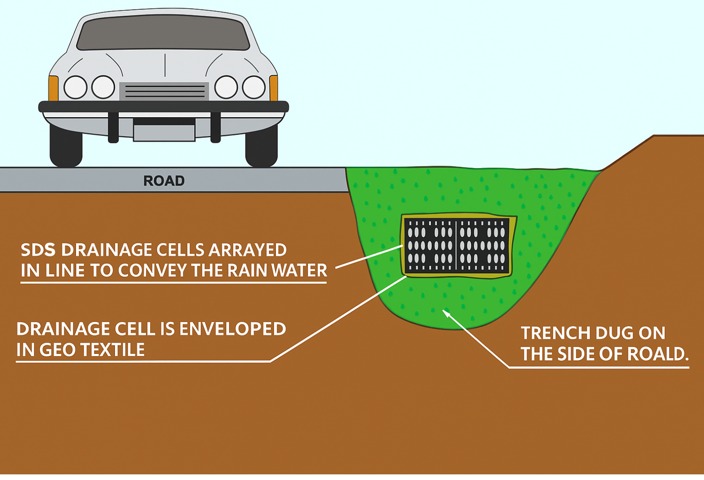
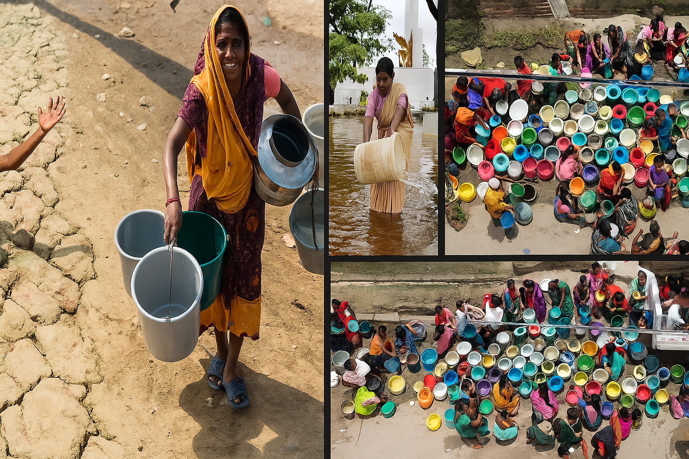

Universal Side, Top & Base Plate
The universal side panel is used for sides, top, and base of the drainage or storage structure...
Smart EnviroModule (SEM) is an innovative solution in stormwater drainage and storage. It is a “4-in-1 product” designed primarily for road works and construction drainage. Unlike traditional systems, the Smart EnviroModule can divert, drain, collect, and store water, and can also be used in sewerage systems. Its Smart Drain feature enables it to function as a modular subterranean storage system, efficiently managing and reusing rainwater for sustainable purposes.
SEM as a road drainage solution
Across the world, various drainage and water storage systems exist — such as massive concrete pipes and rotationally moulded water tanks. However, these conventional systems come with significant drawbacks:
India’s water and wastewater management market is experiencing rapid growth, driven by major infrastructure development and government initiatives. The market, valued at $2.6 billion in 2022, is expected to reach $6.2 billion by 2027. This surge is fueled by the rising demand for wastewater infrastructure and the expanding pipe market across the country. As one of the largest and fastest-growing markets in the APAC region, India presents significant opportunities for advanced water storage and drainage solutions. In addition, the Indian government’s goal to make all urban areas “flood resilient” by 2030 further strengthens the demand for innovative systems like the Smart EnviroModule (SEM).
The Smart EnviroModule (SEM) revolutionizes stormwater drainage and storage by offering a modular, lightweight, and eco-efficient alternative to conventional systems. It eliminates heavy manufacturing, simplifies installation, reduces transport difficulties, and allows flexible underground water storage for reuse — making it a smarter, sustainable, and future-ready solution.
SEM Plates can be stacked as flat pack and even a mini truck would be enough for smaller project thus saving money.
The Smart EnviroModule (SEM) demonstrates strong commercial scalability and profitability. Over a five-year projection, both project volume and financial performance show consistent growth, highlighting the system’s long-term potential in the rainwater and wastewater management sector.
| Year | Tanks/Year | Roads/Year | Total Projects | Total Units | Revenue (₹ Cr) | Profit (₹ Cr) |
|---|---|---|---|---|---|---|
| 1 | 10 | 7 | 17 | 425,000 | 93.5 | 55.25 |
| 2 | 15 | 13 | 28 | 700,000 | 154 | 91 |
| 3 | 25 | 20 | 45 | 1,125,000 | 247.5 | 146.25 |
| 4 | 35 | 33 | 68 | 1,700,000 | 374 | 221 |
| 5 | 50 | 41 | 91 | 2,275,000 | 500.5 | 295.75 |
The Smart EnviroModule (SEM) offers excellent return on investment for all stakeholders — providing a patented, high-demand product that serves as both an efficient drainage and sewerage system for manufacturers, and as a versatile, cost-effective water storage and management solution for consumers.
The universal side panel is used for sides, top, and base of the drainage or storage structure...
The universal internal and end cap plate is used to close off the ends of the structure...
The load bearing plate provides extra strength to the structure...
SEM installation also requires the use of porous geotextile material for filtration applications and non-porous geotextile material for water harvesting and storage applications.
This diagram illustrates a residential rainwater harvesting system designed to collect, store, and manage rainwater efficiently. Rainwater from the roof is directed through the downpipe into the EnviroSump, where initial filtration occurs. The filtered water then flows into the EnviroModule2 rainwater tank for storage. From there, it can either be pumped for household use or directed to an infiltration or detention tank for groundwater recharge. The system is protected by a waterproof liner and geotextile fabric, with sand backfill ensuring structural stability. Additional features such as the pump suction well and overflow outlet help regulate water levels and prevent flooding, promoting sustainable water use within the home

Downpipe 1 .Inlet pipe 2 .Discharge control pit 3 .Lockable lid/grate 4 .EnviroModules 5 .Welded tank liner 6 .Protection fabric 7 .Overflow pipe 8 .Coarse sand backfill 9 .Maximesh screen 10 .Suction line 11 .Above ground pump
This diagram illustrates a residential rainwater harvesting system designed to collect, store, and manage rainwater efficiently. Rainwater from the roof is directed through the downpipe into the EnviroSump, where initial filtration occurs. The filtered water then flows into the EnviroModule2 rainwater tank for storage. From there, it can either be pumped for household use or directed to an infiltration or detention tank for groundwater recharge. The system is protected by a waterproof liner and geotextile fabric, with sand backfill ensuring structural stability. Additional features such as the pump suction well and overflow outlet help regulate water levels and prevent flooding, promoting sustainable water use within the home
This system demonstrates an innovative approach to wastewater
management and renewable energy generation. Sewage from the
residential home is collected and treated in underground Smart
Enviro-Modules, where organic waste undergoes anaerobic digestion
to produce methane gas. The methane is then directed to a combined
power and heat converter, generating electricity that can be fed
into the power grid and heat for domestic use.
Safety features include an automatic timer, mechanical diaphragm
switch, exhaust fan with a timer and trigger assembly, a loud
warning siren, and a flashing red light to indicate system status.
The setup also includes manholes for maintenance access, secured
with padlocks for safety. This integrated sewage treatment and
biogas recovery system not only reduces environmental pollution
but also provides a sustainable energy source for residential
applications.
At Smart EnviroModule, we design and implement advanced Storm Water Management Solutions that transform rainwater from a waste product into a valuable resource. Our systems are engineered to capture, filter, store, and reuse storm water, ensuring a cleaner environment, reduced flooding, and long-term sustainability.
This illustration shows how the Smart EnviroModule (SEM) efficiently captures rainwater from roads, walkways, and surrounding areas. The collected water passes through a filtration and storage module below ground, where it is filtered, stored, and redirected to support groundwater recharge, irrigation, or reuse — all while preventing surface flooding and maintaining a green, sustainable urban environment.
Enviro Modules are assembled
Modules are placed inside fabric.
Tank is ready for backfill with 400-600mm cover.
The Smart EnviroModule (SEM) represents more than just a
breakthrough in rainwater and wastewater management — it is a
commitment to a sustainable future. By transforming the way India
captures, stores, and reuses water, SEM addresses two of our greatest
challenges: flood prevention and water scarcity.
Our patented system is modular, scalable, and cost-effective,
making it adaptable for
urban, industrial, rural, and village applications alike. From
residential complexes and villages to industrial zones and smart cities,
SEM ensures that every drop of rainwater is valued and reused —
helping restore balance between people and nature.
Through innovation Smart EnviroModule (SEM) is leading the
way toward a cleaner, greener, and more water-secure India, where
technology and nature work together to protect our planet’s most vital
resource — water.
Smart EnviroModule — Redefining Water. Restoring the Future.